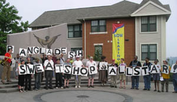
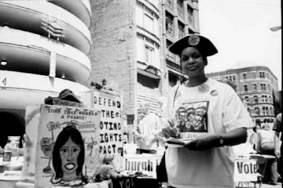

Submitted on Fri, 09/15/2006 - 9:47pm
Wednesday September 13, 2:15 PM
Bangladesh garment workers have rejected a proposed new monthly minimum wage of 23 dollars following violent protests over pay and conditions.
"It's far lower than our expectations. We hoped the commission would think about the cost of living in the country before fixing this absurd minimum wage," Nazma Akhter, a garment labour union leader, told AFP.
Rioting workers torched 16 factories and ransacked hundreds of others in May. At least two people were killed and scores injured after security officers shot at employees.
The workers went back to work in mid-June after employers promised to set a new minimum wage.
But employee representatives Wednesday dismissed the new wage of 1,604 taka (23 dollars) following an announcement late Tuesday by the government's National Wage Commission.
Submitted on Sat, 07/15/2006 - 12:53pm
Dave Zirin & Derek Tyner - The Nation, July 14, 2006.
Major League Baseball's All-Star game is supposed to be a breezy exhibition of the sport's brightest stars. It's also a place for baseball's corporate patrons to be wined, dined and reassured about the current state of the game.
But at this year's All-Star game in Pittsburgh, the party was crashed by a bull-headed group of about seventy activists determined to change the way the corporate game is played. The Pittsburgh Anti-Sweatshop Community Alliance (PASCA) held a spirited rally outside Tuesday's game at PNC Park followed by a march to Roberto Clemente Bridge. The procession was a celebration of something anti-sweatshop activists had never been able to claim with Major League Baseball: Real progress.
For several years, PASCA has tried to get the Pirates to address the unfair working conditions in some of the factories where their apparel is produced. For several years they've been treated the way other National League teams treat the Pirates: like a doormat. But as the All-Star Game approached, PASCA's dogged work finally paid off.
Submitted on Tue, 07/11/2006 - 4:21am
Pittsburgh rolls out red carpet for All-Stars
By MICHAEL COWDEN The Associated Press
PITTSBURGH - As Coast Guard boats armed with machine guns patrolled below, New York Yankees shortstop Derek Jeter, dapper in a tailored suit and sitting on a shiny pickup, rode across a bridge to the All-Star game like a conquering hero.
Thousands cheered - and some jeered - as player after player crossed over the Allegheny River on, appropriately enough, a red carpet rolled out across the Roberto Clemente Bridge from the downtown Pittsburgh to the stadium.
"Baseball is the best game, and this is the epitome of baseball. Other sports try to imitate it, but they cannot," said Vince Conte, 44, a lawyer from Montclair, N.J., in town for his sixth All-Star game.
Submitted on Sun, 07/09/2006 - 9:10pm
Anti-Sweatshop Proclamation by Pittsburgh Pirates Within Reach - Anti Sweatshop Activists Volunteer at the All Star Fan Fest - Contact: Kenneth Miller - 412.241.1339
- Celeste Taylor - 412.670.0937
PITTSBURGH -- The Pittsburgh Pirates and Major League Baseball met with representatives of the Pittsburgh Anti-Sweatshop Community Alliance (PASCA) on Saturday July 8, 2006 to discuss PASCA's calls for the Pirates to step up to bat for workers rights and an end to sweatshop-made baseball apparel. The PASCA delegation was led by Tim Stevens of the Black Political Empowerment Project.
The delegation brought forth a series of demands stemming from the demands of international garment workers, including the National Garment Workers Federation of Bangladesh. The demands are also based on the example set by the United Students against Sweatshops and the Workers Rights Consortium. Communities that identify with a specific logo, such as colleges universities, extend civil and human rights protections to the factories where the logo apparel are produced.
Submitted on Tue, 07/04/2006 - 1:57pm
The New Pittsburgh Courier - July 04, 2006
Write On...Hit a home run for justice
Dear Editor: If Josh Gibson—a Negro League player who has been credited with hitting nearly 800 homeruns when he played for the infamous Pittsburgh Crawfords and Homestead Grays in the 1930s and 1940s—were alive today, he might be absolutely thrilled to see the July 11 celebration of Major League Baseball called “the All-Star Game” used as a symbolic, but truly meaningful opportunity, to hit “a home run for justice!” The league’s special events director, Morgan Littlefield, says he wants the league to celebrate the historic contributions of Negro League players during their visit to Pittsburgh. I am certain that part of that desire is based on the need for the league to somewhat make up for past wrongs with regard to race and baseball in America.
It would be most appropriate for the Pittsburgh Pirates, as the home team for a city known for its commitment to breakthroughs in justice in labor relations, to use this internationally-televised sporting event as an opportunity to correct a present wrong by creating a bridge between baseball and economic justice throughout the world! The Pittsburgh Pirates can be the major league team which actively requests the league to join with the nearly 160 universities and colleges across the nation which include a “code of conduct” for labor conditions in all of their contracts with companies which produce merchandise sporting their names. The Pittsburgh Pirates have a most wonderful opportunity to provide those who presently labor in sweatshops throughout the world, providing many of us with our favorite team’s T-shirts and sweatshirts, with a new life of economic security.
As one who grew up in Pittsburgh’s Hill District celebrating the heroics of the 1960 World Series and the heartwarming moments of the “We Are Family” World Series victory of 1979, I now wish to have a new reason to cheer for our home team when they take the lead in becoming a champion for justice for those who presently labor in severe poverty and under some of the most atrocious working conditions on the planet!
Tim Stevens
(Mr. Stevens is chairman of B-PEP, the Black Political Empowerment Project and former president, NAACP Pittsburgh Branch)